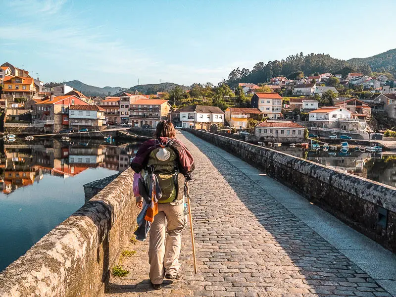
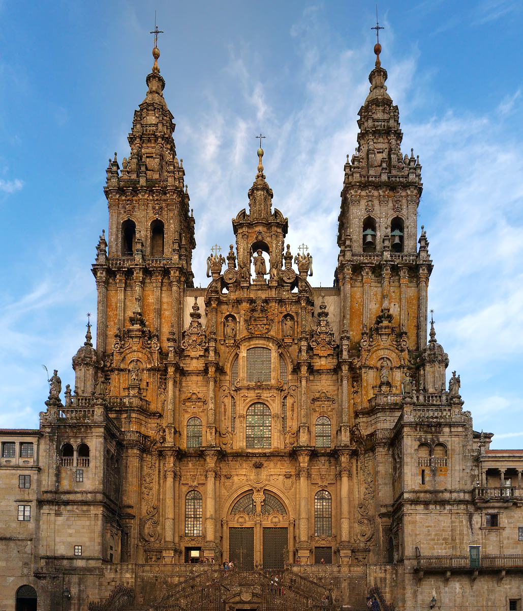
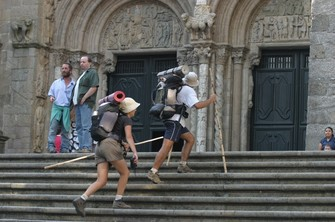
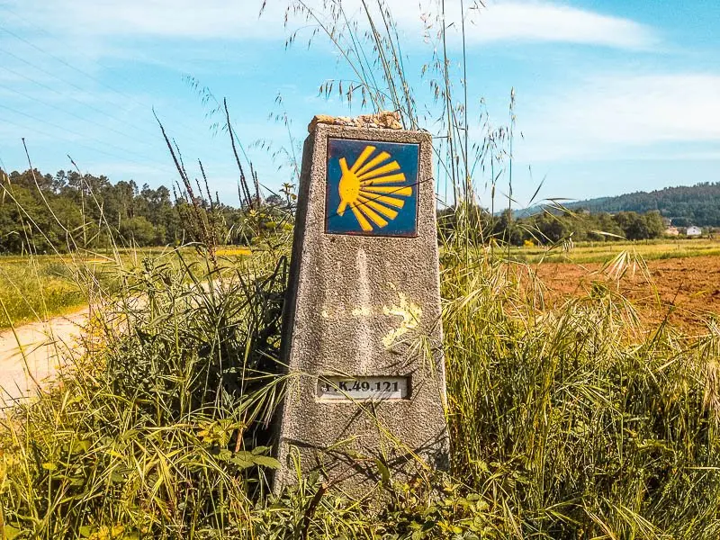
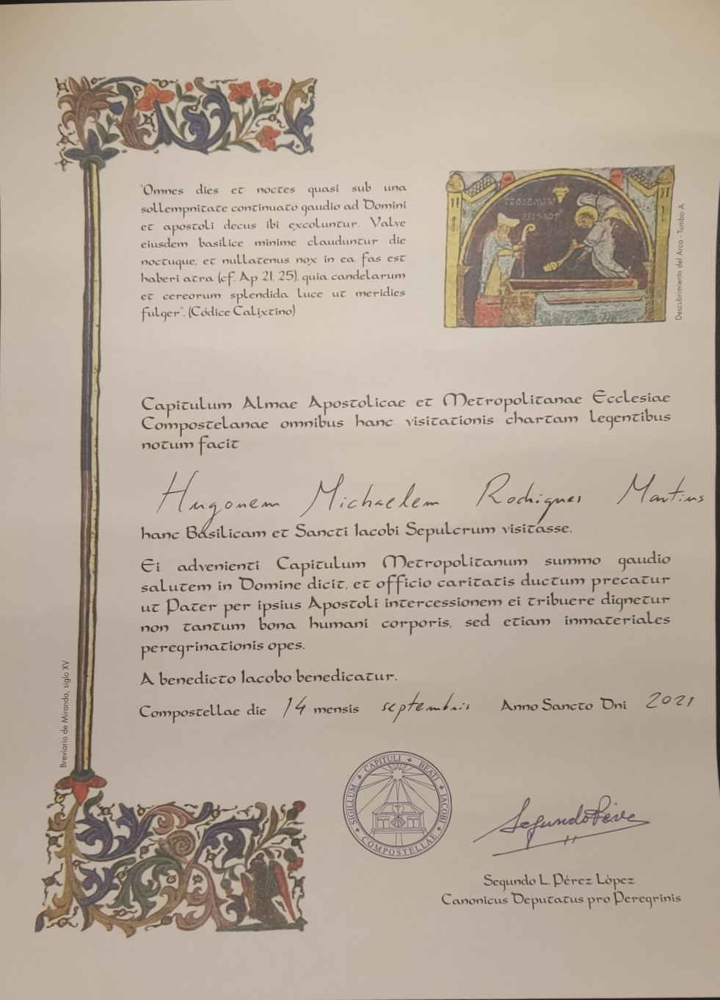

Caminhos de Santiago

Todos os anos milhares de pessoas, vindas de todos os cantos do mundo,
caminham em direção à cidade de Santiago de Compostela no Noroeste de Espanha.
Maior parte destas pessoas são originárias de Espanha, partindo de vários sítios
de Espanha, e Portugueses, partindo maioritariamente da cidade do Porto.
Estes peregrinos caminham
em direção à cidade Galega por vários motivos, sejam eles religiosos, espirituais, ou até mesmo
apenas turísticos e paisagistícos. No entanto, nem toda a gente realiza o caminho a pé, várias pessoas
fazem-no de Bicicleta e algus até a cavalo, apesar de hoje em dia já nao ser muito habitual.
Apesar desta grande e variada afluência a Santiago de Compostela que presenciamos nos dias de hoje, nem sempre houve
tradição de peregrinação a Santiago e nem sempre foi tao procurada.
Tudo começou quando no século IX foram descobertas ruinas de um enterro primitivo
que foram identificadas como túmulos do apóstolo Santiago e dos seus discípulos
Teodoro e Atanásio. Imediatamente, o rei Alfonso II visita o local e manda edificar
uma modesta igreja, que hoje conhecemos como a Catedral de Santiago de Compostela.

Os soberanos asturianos Alfonso II e Alfonso III, juntamente com a Corte de Oviedo,
são os primeiros peregrinos conhecidos do século IX. Ao Longo do século X foram chegando peregrinos a Santiago de
França, Italia e outros locais da Europa, sendo estes todos religiosos.
Santiago consolida-se rapidamente como centro de peregrinação internacional entre os séculos XI e XIII.
A época de ouro das peregrinações situa-se nestes séculos: França, Itália, centro e leste da Europa, Inglaterra,
Alemanha, inclusivamente Islândia. E, claro está, toda a Hispânia. Chegavam a pé, a cavalo, de barco… e eram assistidos
principalmente por uma rede de hospitais fundados por reis, nobres e burgueses das cidades, sobretudo nos bairros de francos,
e pelos monges de Cluny, que recebiam os peregrinos nos mosteiros.
O acolhimento ao peregrino constitui um dos aspetos fundamentais da experiência do Caminho desde a Idade Média. Um serviço
permanente de ajuda sanitária e espiritual que foi organizado a partir das diversas instituições, desde a Coroa e a Igreja ao
próprio povo. A fundação de hospitais dedicados a atender as necessidades espirituais,
materiais e sanitárias do crescente número de peregrinos que se dirigiam a Santiago foi crucial.
Para a mentalidade medieval o peregrino era um enviado do Céu e, portanto, era necessário considerá-lo e tratá-lo como se
fosse o próprio Jesus Cristo. Por isso não era raro que nas cenas do aparecimento de Jesus ressuscitado aos discípulos de
Emaús se representasse o Salvador como peregrino, com distintivos próprios da peregrinação jacobeia como o surrão e a concha de vieira.
As primeiras décadas do século XXI estão marcadas por uma conceção global do pensamento e da economia, pelo desenvolvimento da tecnologia
digital ao serviço da comunicação, da cultura e do entretenimento, pela ameaça do terrorismo jihadista – os atentados de 11 de setembro

de 2001 em Nova Iorque e Washington podem marcar o início do século –, por uma crescente preocupação para com o ambiente e pelo estouro
em 2008 de uma crise económica mundial que endureceu a situação social.
Perante esta ansiedade e procura de novas experiências enriquecedoras, a peregrinação tradicional a Santiago propõe uma mudança
radical de comportamento, uma alternativa de valores humanos e universais face a um mundo cada vez mais ~
globalizado, e também alienante e competitivo.
Neste início de século e milénio a peregrinação jacobeia é, mais do que nunca, um fenómeno transversal: por um lado, espiritual e ecuménico,
também aberto ao conhecimento, à amizade e à compreensão mútua. Um Caminho cujos peregrinos contam também com a vivência da paisagem, da
história, da cultura partilhada e da solidariedade.
O peregrino encontra-se hoje com um espaço considerado sagrado durante séculos: o próprio Caminho de Santiago; uma geografia sacralizada
que também é itinerário histórico e cultural. É, em última análise, uma forma diferente de peregrinação, que não nega a tradicional mas
que a esta somou os desejos e as motivações das sociedades contemporâneas.

Independente de qual seja o caminho que faça e de qual seja a maneira que o decida fgazer, seja a pé, Bicicleta ou outro, durante o
caminho irá encontrar e conhecer bastantes outros peregrinos de todo o mundo, e irá conhecer pessoas que ficrão na sua memória para sempre
e com quem possívelmente irá aprender bastante.
Apesar de haver sempre pessoas a fazer o caminho, por ser uma viagem tão longa por vezes pode ser também um pouco solitária e por vezes darás
por ti a andar quilómetros vendo apenas os marcos e setas do caminho. Estes marcos mostram a distância que ainda te falta percorrer até Santiago,
o que no início parece um núimero enorme, mas à medida que o objectivo se torna mais próximo a vontade de chegar torna-se maior.
O caminho seja feito em grupo ou sozinho é uma excelente opurtinidade para aproveitar os momentos de dificuldade por
que se passa, para olhar em retrospetiva para a vida e crescer como pessoa.

Tendo já chegado a Santiago de Compostela, deparamos-nos perante uma cidade que apesar de ser bastante populada, maior paret das
pessoas que encontramos são peregrinos ou turistas, sendo que é uma cidade que durante o ano vive à volta da peregrinação. É incrível quantidade
de peregrinos que se sentam em frente à fachada, finalmente completa, da Catedral para aproveitar o bem merecido descanso após ter feito
dezenas de quilometros, e é também uma coisa muito bela de se ver.
Como prova de se ter realizado esta grande e dolorosa viagem e para juntar ao sentido de missão cumprida, na oficina de Santiago podemos
obter a Compostela, um documento em latim que indica a conclusão da nossa peregrinação seja qual seja o seu motivo.
O símbolo e marca do Caminho de Santigao, a Concha de Vieira, é a lembrança que quase toda a gente que passa por Santiago leva consigo para
casa, seja uma concha mesmo, em forma de colar ou até tatuado no corpo.